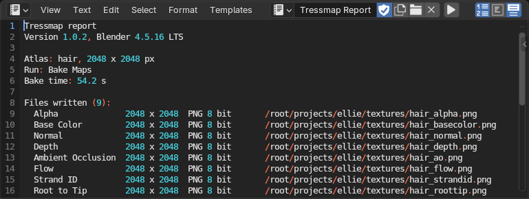

How Tressmap was tested
Tressmap 1.0.2 for Blender 4.2 LTS to 5.3, tested on Linux in 4.2.23, 4.5.16, 5.2.4 and 5.3.0. Back to the Tressmap page or the quick start.
What was run
| What | Result (Tressmap 1.0.2) |
|---|---|
| Test suite, headless, in Blender 4.2.23, 4.5.16, 5.2.4 and 5.3.0 (Linux) | 237 passed on each, 0 skipped |
| Real Blender window, 1366 x 768, the tab's buttons and fields pressed and filled with real mouse and key events, on the four versions | 68 results, all passed, on each |
| Install from the zip in a real window, on the four versions | 12 results, all passed, on each |
8192 x 8192 bakes (pytest -m huge) | 4 passed; Blender Studio's cattle fur, 23,703 strands in 8 slots: 522 s |
| Preview cards imported with Godot 4.7.2's headless importer | passed (not opened in the editor) |
| Blender Studio's cattle fur, 8 slots, 23,703 strands, all eight maps and the packed image | 38 s at 2048 px, 137 s at 4096 px (PNG 8 bit; 4 cores, Blender 4.5.16) |
| 6,000 strands of 40 points each, four slots, all eight maps, 4096 px, PNG 16 bit | 282 s (the cattle fur, 23,703 strands of 9 points each: 139 s with the packed image) |
| An Unreal-style bake on the cattle fur: DirectX normal green, PNG 16 bit, channel packing, 4096 px, compared with an OpenGL bake of the same groom | nine files of 4096 x 4096, four channels in the packed image; the normal's green is the OpenGL green inverted on every hair pixel, red and blue identical |
| Ellie's eight locks on the product page, 1,090 strands, 2048 px | 54.2 s in the run shown (4 cores, Blender 4.5.16) |
Every figure was measured on Tressmap 1.0.2 on a four-core Intel Xeon 2.30 GHz Linux machine; timings vary by a few seconds from run to run.
By hand, with Blender's defaults
The by-hand route: point an orthographic camera at the clumps, render in Cycles with the Normal, Depth (or Mist) and Ambient Occlusion passes on, add Shader AOVs (Curves Info's Intercept for root-to-tip and Random for strand ID, the Geometry node's Tangent for flow), save each pass, then pad and pack the images. With Blender's default settings that route gives wrong maps. On our test clumps (Blender 4.5.16) root-to-tip reads 0.53 a quarter of the way along a strand instead of 0.25, depth has 5 grey levels, and flow from Curves Info's Tangent Normal is 135 degrees off on average. With the view transform set to Raw and the Geometry node's Tangent, the by-hand flow is right to a median of 0.68 degrees; Tressmap does the setup for you.
What Tressmap measured
- Flow: where a strand lies clear of the others the flow map agrees with the strand's direction to 0.13 degrees; over every strand segment of 200 crossing strands the median error is 0.24 degrees and the mean 6.7; on one slot of the cattle fur the median is 7.1 degrees (an upper bound).
- Padded base color shows no dark halo when downsampled by 2, 4 and 8 on the test clumps.
- Every written file is the size you chose, square and 2:1.



Limits
- Hair curves objects only. One slot is one flat clump: a whole groom in one object bakes as a view from above it, and Tressmap says so. Blender 4.5 and later can split a groom with Separate; 4.2 LTS cannot, so groom each clump as its own object.
- Flow follows the strand on top (figures above).
- Blender answers Esc between the steps of a bake, not during one. On the cattle fur the longest step is 1.2 s at 2048 px, 2.1 s at 4096 px and 5.2 s at 8192 px; a bake at 8192 px needs about 6 GB.
- Bake time follows the atlas size, the points in each strand and how much hair overlaps, not only the number of strands: 6,000 strands of 40 points take 282 s at 4096 px, the cattle fur's 23,703 strands of 9 points 139 s.
- Base color is the color of the shader the hair uses (Principled, Principled Hair in Color mode, Hair, Diffuse or Emission, also inside node groups); with none, the material's Viewport Display color is used and the report says so.
- No grooming, no card placement, no specular or roughness maps, no engine shader, no EEVEE bake.
- Windows and macOS were not tested; Unity and Unreal were not tested; the Godot check is a headless import.
How the pictures on the product page were made
Everything on the product page except the contact sheet of the eight files (the files themselves, shrunk) is a capture of one pass through a real Blender 4.5.16 window on a virtual display (Xvfb, 1920 x 1080, interface scale 1.1), with Tressmap 1.0.2 installed from its zip.
- The Tressmap buttons, the Result buttons and the scrolling are real mouse events.
- A script sets the layout of the window, the view of Ellie, which object types the viewport draws (no bones or helper shapes), the selection of the lock before each Use Selected Hair click and the 3D cursor before Make Preview Cards.
- The hair conversion and the locks use Blender's own Convert to Curves (front 2,300, back 3,400, ponytail 2,850 and loose 40 strands) and Separate. Which strands go into a lock (the 150 whose roots are nearest the left-most, the right-most or the highest root of a hair system) is chosen by script; no hair is drawn or edited by hand.
- Her mesh hair and the groom's helper objects are hidden in the viewport so that the hair curves are what is shown.
- The recordings are cut from one 263 s recording of that pass; the bake recording is cut as its caption says, and nothing else is cut or drawn on.
Character: Ellie Rig (CC) Blender Foundation | studio.blender.org, Sprite Fright, CC BY 4.0. Test groom for the timings: "Fur - Highland Cattle" by Simon Thommes, Blender Studio, CC0. Support: support@ochrestack.com.